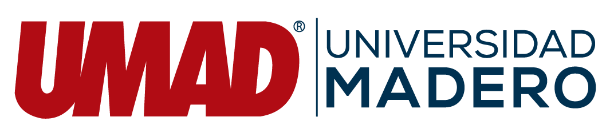

Evaluación globalInicio vs. Actual
Inicial Actual

Ingeniería en Software · Puebla
01 · Autodiagnóstico
Todas las categorías
La estabilidad numérica refleja consistencia en el autodiagnóstico; las reflexiones muestran mayor profundidad y criterio adquirido.
02 · Panorama estratégico
03 · Ejecución
04 · Visión 2031
Te escribo hoy, 25 de noviembre de 2026, mientras estoy terminando el 3er semestre de la carrera. Si estás leyendo esto cinco años después, espero que sigas conservando esa disciplina que hoy te levanta todos los días, aunque obviamente cuando no tengo nada q hacer prefiero mil veces dormir.
Para este momento de tu vida, espero que hayas fortalecido especialmente aquellas habilidades que hoy representan tu mayor reto: la comunicación asertiva y la capacidad de empoderar genuinamente a otros. Quiero pensar que ya no sientes la necesidad de cargar con todo para asegurar que salga bien, sino que sabes formar, inspirar y dar confianza a equipos de desarrollo y trabajo para que brillen por mérito propio.
Desde hoy me comprometo contigo a dejar de dar las cosas por sentado, a escuchar en verdad a los demás en lugar de luego luego resolver. Continuar ser disciplinado y empatico con los demás (espero hayas ya mejorado eso obvio), también que pues mantengas la disciplina y controles mejor tu estres,tambien aprender nuevas habilidades no solo con lo de la uni, si no con otras cosas o experiencias que pudiste haber hecho a lo largo del camino y que te estas incluso prometiendo desde ahorita. Q pues obvio yo haré todo lo posible por ti
Espero que hayas superado el impulso de querer controlarlo todo solo, que hayas vencido el desgaste de querer abarcar más de lo humanamente sano, y que hoy seas un líder íntegro: alguien que no solo es bueno en su trabajo, sino que impulsa a las personas que trabajan a su lado a crecer y confiar en su propio talento. Animarlas e impulsarlas a ser mejores personas. Y pues tambien muy por aparte que conserves las amistades que hiciste, amistades que tengo ahorita, o incluso amistades que no tenía de idea que podían existir, espero que hayas triunfado y tengas dinero, oo al menos en un buen camino a tenerlo